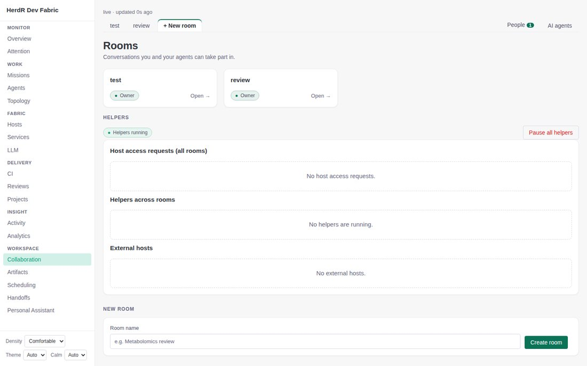
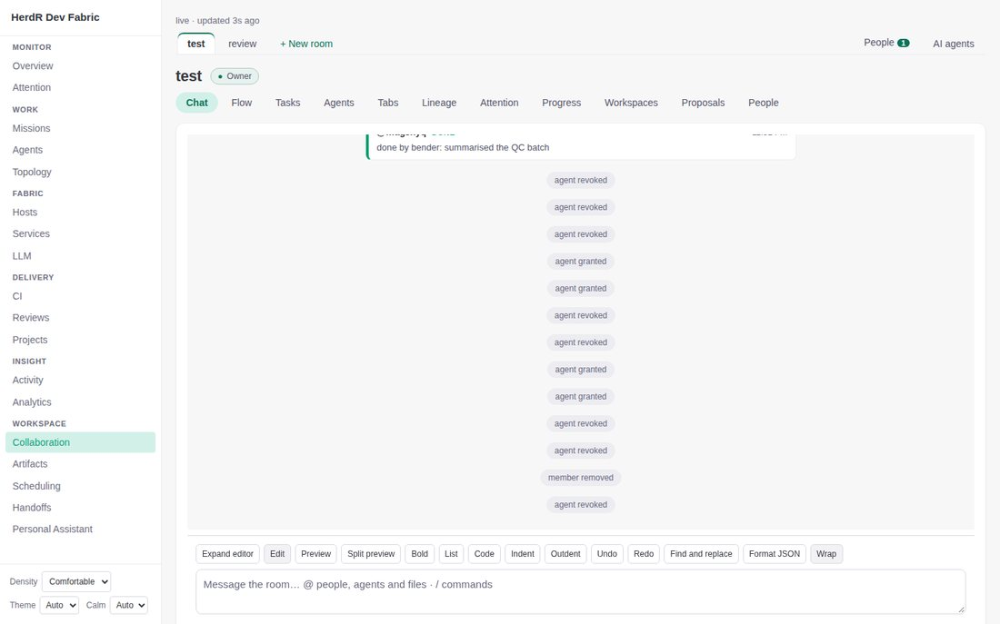
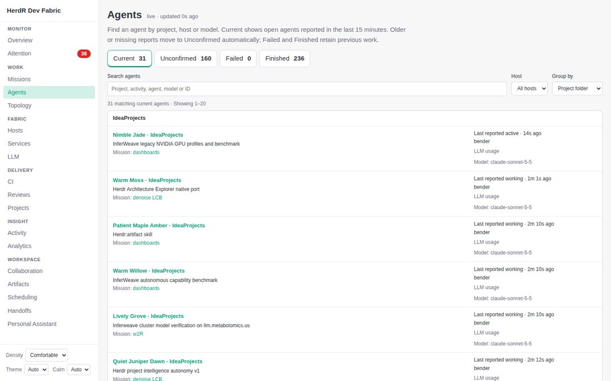
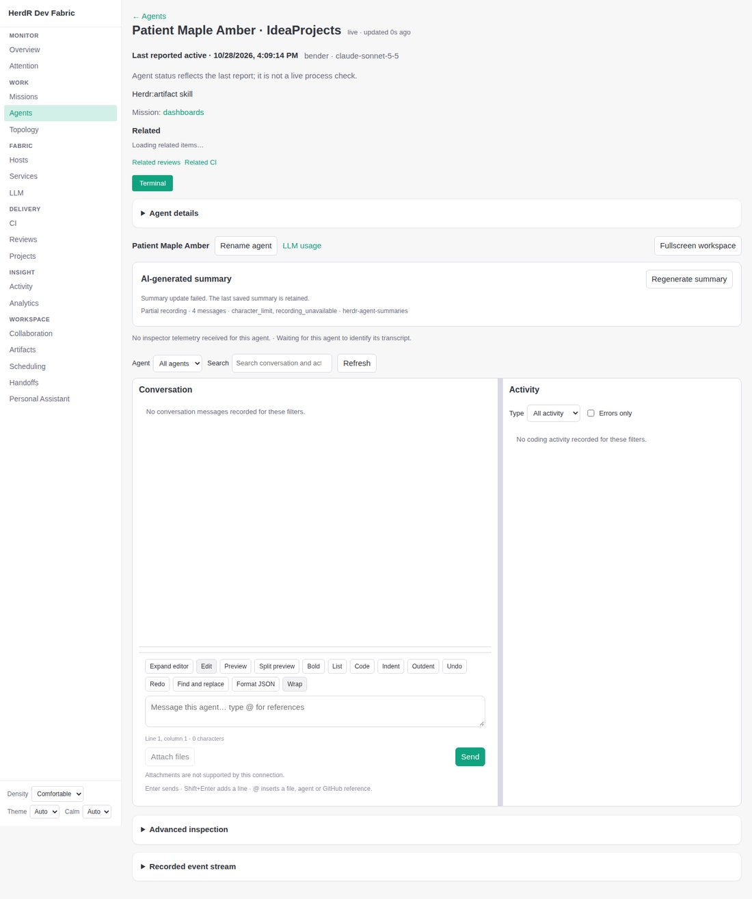
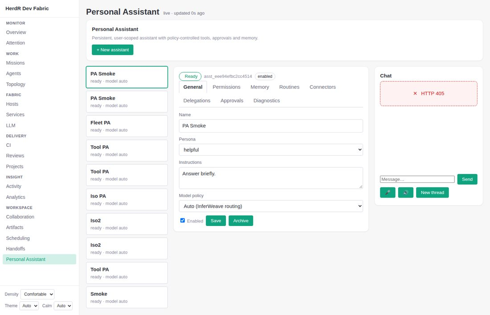

Dashboard: use cases, busyness, and what to merge or drop
Based on the live production dashboard (read-only), every page at desktop, dark and mobile. Numbers are measured on the first full-page render at 1440 px. Use cases are my reading of what each page is for; I have no usage analytics, so the cut proposals below are judgement and need your confirmation.
Rules every page should follow
- One page, one question. If a page answers two different questions, it is two pages or one page with a clear primary and a hidden secondary.
- One primary action per screen; everything else lives in a menu, a drawer, or a second tab.
- Three levels of navigation at most (sidebar, page tabs, view toggle). The collaboration room currently has five.
- Empty and healthy things take one line, not a dashed box. Errors and things needing a decision get the space.
- One card level. No panel inside a panel inside a panel (the CI page has four).
- Spacing scale of 4 / 8 / 16 / 24 / 32 px used everywhere, one 12 px floor for text, and a reading width of about 75 characters for prose.
- Page header pattern: title, a status chip, one line of description, actions on the right. No paragraph-length intros; the long text moves behind an info disclosure.
How busy each page is today
Interactive controls visible and characters of text on the full page. Higher on both means harder to scan.
| Page | Controls | Characters | Page height (px) |
|---|---|---|---|
| /ci | 1710 | 14,316 | 2,134 |
| /attention | 167 | 3,293 | 1,889 |
| /artifacts | 100 | 5,811 | 3,389 |
| /overview | 100 | 3,578 | 1,936 |
| /herd | 89 | 3,605 | 2,371 |
| /llm | 65 | 4,315 | 2,531 |
| /activity | 27 | 4,028 | 2,137 |
| /agent detail | 54 | 1,320 | 1,580 |
| /hosts | 31 | 2,193 | 1,389 |
| /topology | 37 | 1,358 | 1,084 |
| /personal-assistant | 42 | 750 | 927 |
| /services | 38 | 858 | 900 |
| /scheduling | 26 | 1,505 | 900 |
| /missions | 34 | 894 | 900 |
| /collab | 31 | 416 | 900 |
| /analytics | 26 | 666 | 900 |
| /reviews | 29 | 476 | 900 |
| /github/projects | 25 | 492 | 900 |
| /github/projects | 25 | 492 | 900 |
| /review-gate | 23 | 331 | 1,045 |
| /publications | 23 | 202 | 900 |
| /handoffs | 21 | 211 | 900 |
| /architecture | 21 | 164 | 900 |
Collaboration


Use case
Who: an operator working with colleagues and their agents. Question: "What did we say, who is doing what, and what needs me in this room?" Done when: a task is handed to an agent or person and I can see it finish.
What makes it busy
- Five navigation layers: sidebar, room tabs (test, review, + New room), a second right-aligned pair (People, AI agents), ten view tabs (Chat, Flow, Tasks, Agents, Tabs, Lineage, Attention, Progress, Workspaces, Proposals, People), and an editor toolbar.
- People appears twice (top right and as a tab), and AI agents is both a top-level tab and a room tab (Agents).
- System noise in the conversation: access grants and revocations are the same size as messages. In the test room they push the real messages out of the first screen.
- The composer is a text editor: Expand, Edit, Preview, Split preview, Bold, List, Code, Indent, Outdent, Undo, Redo, Find and replace, Format JSON, Wrap, before you can type "ok".
- Landing page: three empty "no X" boxes take more room than the rooms themselves; creating a room is a permanent form.
Proposal
Result: 11 view tabs become 3 plus a menu; two top-right links disappear; the composer shrinks from 14 controls to 3. Landing page: rooms as a list, "Helpers" as one line ("No helpers running") that expands only when something is running.
Open question: I cannot tell what the Tabs tab is for from the UI or guide. If nobody uses it, drop it.
Sessions (Agents list and agent detail)


Use case, list
Question: "Which agents are working right now, and is any of them stuck or failed?" Done when: I open the one that needs me.
Use case, detail
Question: "What is this agent doing, and can I steer it?" Done when: I sent it a message or opened its terminal.
Proposal: list
- Rows: name, one-line task, state chip, host and model as one muted line, age. Per-row "LLM usage" links go to the detail page.
- Tabs Current / Unconfirmed / Failed / Finished become Current (default) and History with a status filter. 396 of the 427 agents are history.
- Missions, Topology and Handoffs fold in here (see the table below): a "Group by" menu offers project, host and mission.
Proposal: detail
Result: conversation starts about 300 px higher; the repeated title row and the permanent "status reflects the last report" sentence go (it becomes a tooltip on the state chip).
Personal Assistant

Use case
Who: the operator. Question: "Ask my assistant to do something, and approve or refuse what it wants to do." Configuration is rare; chatting and approving is daily. Today the layout gives the rare job the centre of the screen and the daily job a narrow strip.
What makes it busy
- Nine assistants listed, eight of them look like test fixtures (PA Smoke ×2, Tool PA ×3, Iso PA, Iso2 ×2, Smoke, Fleet PA). In production they are noise.
- Eight settings tabs (General, Permissions, Memory, Routines, Connectors, Delegations, Approvals, Diagnostics) wrapped onto two rows.
- Chat is the smallest panel and the "Approvals" tab, the thing that needs action, is buried in the second row.
Proposal
Result: 8 tabs become 4 sections inside one drawer; the daily job gets about 70% of the screen. Archiving the eight test assistants needs your explicit OK (I will not delete anything without it).
Every page: use case and verdict
| Page | Use case (the one question) | Verdict | Why / what changes |
|---|---|---|---|
| Overview | "Is anything wrong, or waiting for me?" | keep, slim | Keep Attention (top 5) and four tiles: agents working, CI failing, hosts down, reviews waiting. Remove the eight mini-lists; each repeats a page one click away. |
| Attention | "What do I need to act on?" | keep | Already grouped. Add Activity as its second tab. |
| Activity | "What changed recently?" | merge into Attention | Same question family; Overview already has "Recent changes". |
| Missions | "Which goals are running or stuck?" | merge into Agents | A mission is a group of agents. "Group by mission" replaces a page. Mission detail (tests, reviews) stays as a detail page. |
| Agents | "Which agents are working or stuck?" | keep, becomes "Work" | See Sessions above. |
| Topology | "What runs where?" | eliminate | It is Agents and Services grouped by host. "Group by host" in Agents and the Hosts page cover it. |
| Handoffs | "Move an agent's work to another harness or host." | merge into Agents | An action on an agent plus a History list. Rare; does not need a sidebar row. |
| Hosts | "Is each machine healthy, and on the right versions?" | keep | Cards and the Fleet versions table become two tabs. Scheduling's placement preview can join here. |
| Scheduling | "Where will queued work run?" | merge into Hosts, or cut | Niche. Needs your call: if you never open it, cut it. |
| Services | "What is running, and where do I open it?" | keep | Four tabs (Catalog, Fabric, Local, System) become filter chips on one page once the empty states are one line. |
| LLM | "Are models healthy and fast; who is using them?" | merge with Analytics models/tokens | Two places answer model and token questions. One "Usage" page with Models, Agents, Problems. |
| Analytics | "How are missions and the fleet doing over time?" | keep, minus models/tokens | Missions, Completion, Stages stay; models and tokens move to Usage. |
| CI | "Are builds green; which project is failing?" | keep, restructure | Four nested panels become: failures first, then a project table, then a project drawer with tests and history. The explanatory sentences move behind info icons. |
| Reviews / Review gate | "Which plans or PRs wait for my decision?" | keep as tabs | Already one sidebar row. Review gate currently errors in production ("failed after 1s"); worth a separate look. |
| Projects / Boards | "What should be worked on next?" | keep as tabs | Already one row. |
| Architecture | "How is this code structured?" | keep | Behind a flag; separate app view. |
| Project intelligence | (unclear) | cut unless used | Returns 404 in production and is behind a flag. Needs your call. |
| Collaboration | See above | keep, simplify | 11 tabs to 3 plus a menu. |
| Personal Assistant | See above | keep, chat first | Settings into a drawer. |
| Artifacts / Publications | "Find a file or report an agent produced, and share it." | keep as tabs | Already one row. |
Resulting navigation
Today: 25 entries. After this proposal: 13.
Overview
Attention (+ Activity)
Agents (+ Missions, Handoffs)
Collaboration
Assistant
Hosts (+ Scheduling)
Services
Usage (LLM + models/tokens)
CI
Reviews
Projects
Architecture
Artifacts
Order of work (if you agree)
- Agent detail and list (highest daily use, clear win).
- Collaboration room: tab consolidation, composer, system-event collapse.
- Personal Assistant: chat first, settings drawer.
- CI page restructure.
- Merges: Missions/Topology/Handoffs into Agents; LLM + Analytics into Usage; Activity under Attention.
- Overview slimming last, once the pages it links to are settled.
Decisions I need from you
- Cut Topology? (I recommend yes.)
- Cut Scheduling and Project intelligence, or keep? (I cannot see usage.)
- Archive the eight test assistants in production's Personal Assistant?
- What is the collaboration Tabs tab for?